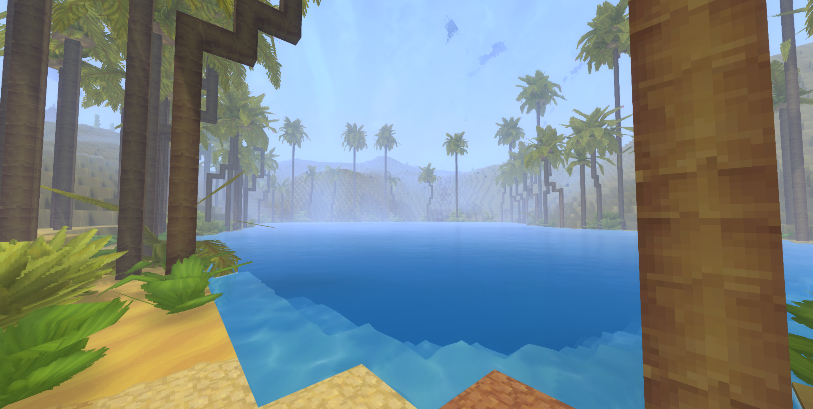
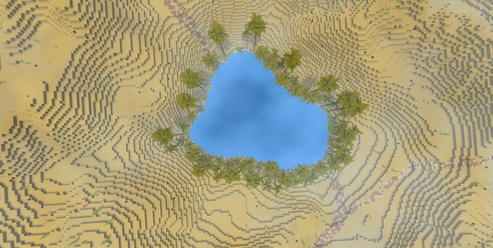
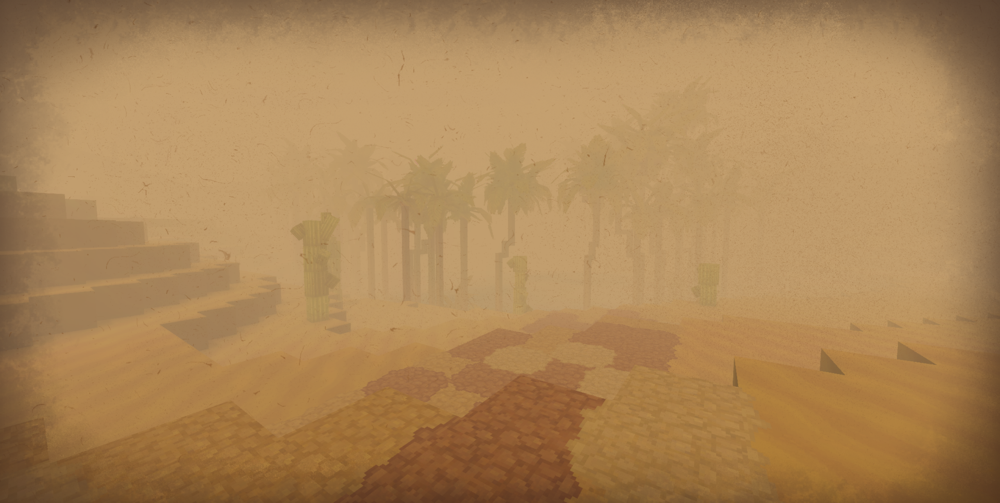
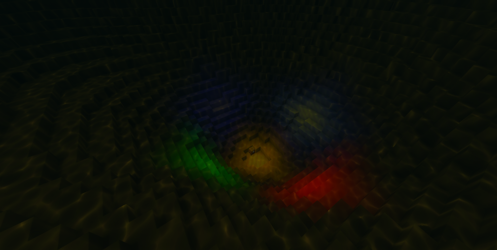
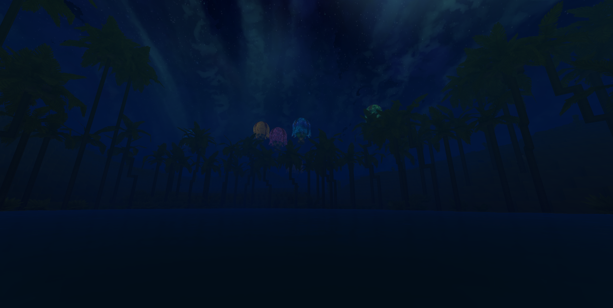

A shimmering anomaly amidst the choking dust of the wastes, The Oasis is a sanctuary of impossible beauty—a pocket of absolute calm where mystical forces defy the laws of the desert.
The Oasis

| Location Information | |
|---|---|
| Coordinates | X: 617, Z: 787 |
| Area Type | Rural Ruins |
| Mob Threat | Very High |
| Bandit Threat | High |
| Number of Chests | 19 |
| Water Source | Yes |
| Clean Water Source | No |
| Fireplace | No |
| Chef's Stove | No |
| Workbench | No |
| Available Loot | ||
|---|---|---|
| 🍎 Food | ✗ | |
| 🥛 Civilian | Tier 1 | ✗ | |
| ✂️ Civilian | Tier 2 | ✗ | |
| 🛠️ Civilian | Tier 3 | 4 | |
| 🛡️ Military | Tier 1 | ✗ | |
| ⚔️ Military | Tier 2 | 4 | |
| 🏹 Military | Tier 3 | 11 | |
| 🌟 Legendary | ✗ | |
Lore
A shimmering anomaly amidst the choking dust of the wastes, The Oasis is a sanctuary of impossible beauty—a pocket of absolute calm where mystical forces defy the laws of the desert.
The Eye of the Storm
To find The Oasis, travelers must brave a relentless, blinding sandstorm that perpetually rages around its perimeter, acting as a violent barrier to the outside world. Yet, the moment one steps through the threshold of howling wind and stinging sand, they are met with a sudden, breathtaking silence. Over the lake itself, a strange tranquility reigns; the air is perfectly still, and the water remains as flat and clear as glass. Adding to the mystique of this sanctuary, the night sky directly above the pool regularly flares to life with vibrant northern lights, casting an ethereal glow over the dunes that makes the desert feel entirely otherworldly.
Pristine Depths and Flying Convoys
Unlike the murky, contaminated mudholes scattered across the rest of the arid wastes, the reservoir of The Oasis holds perfectly clean, pure, and drinkable water. At the very bottom of this deep basin, travelers can peer down to see brilliant, mystical lights pulsing beneath the surface. The origin of this glow remains a mystery, though local folklore suggests it is connected to a legendary hot air balloon convoy that once sailed high over the desert, perhaps dropping a magical payload or artifact into the depths during their passage.
Anomalies of the Oasis
- The protective sandstorm barrier, shielding the inner sanctuary of absolute calm from the harsh desert winds.
- A pure water reservoir, serving as one of the only reliable sources of clean, unpolluted hydration in the region.
- The nocturnal auroras, painting the desert sky in surreal shades of green and violet.
- The submerged mystical lights, casting a warm, inviting glow from the lakebed.
The Legend of the Sunken Chest
Where there is magic and mystery, there is always talk of treasure. Whispered legends among desert scouts claim that the glowing reservoir holds more than just beautiful lights. Deep within the submerged trenches of the lake, tucked away from plain sight, lies a secret cavern or hidden recess. Those brave enough to dive into the deep, glowing waters and search the lakebed might just find a hidden chest containing rare relics and invaluable treasures left behind by the oasis's mysterious creators.
Present Day
For adventurers mapping out their journey, The Oasis is a vital, non-negotiable pitstop. Because the lands further to the north grow increasingly hostile and barren, players frequently use this tranquil sanctuary to completely fill their canteens and water skins with clean water. Navigating the surrounding sandstorm requires a bit of directional patience, but the reward of safety, pure hydration, and the chance at a hidden sunken chest makes it the ultimate desert refuge.
Step out of the raging sands and bask in the quiet glow of The Oasis. Fill your flasks, look up at the dancing northern lights, and take a deep breath of calm air—just keep an eye on the glowing depths below, for secrets have a way of calling to those who dare to dive.
Gallery



